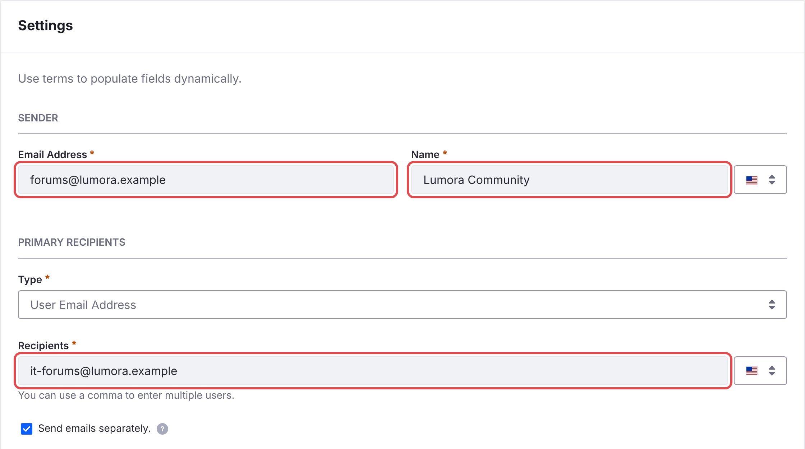

Email Notifications
Liferay Forums emails members about replies to topics they follow and about mentions. Before it can send them, set the addresses they’re sent from.
- In Applications → Notification Templates, open C2M0 Notification Email Reply and set:
- under Sender, Email Address: an address of a domain your site owns, for example
forums@example.com; - under Sender, Name: the name members see, for example Example Community;
- under Primary Recipients, Recipients: an address you own. Members are always added in BCC, so this address only gets a copy.
Then click Save.

- under Sender, Email Address: an address of a domain your site owns, for example
-
Do the same for C2M0 Notification Email Mention.
-
In Control Panel → Instance Settings → Email → Email Sender, set the address Liferay sends email from. Liferay sends no email without it.
- Make sure Liferay’s mail server is configured.
Until you change them, the templates use the placeholder address forums-noreply@example.xyz. Mail servers reject or junk email from a domain you don’t own.
The batch creates these two templates, and keeps your changes to them when it’s deployed again. The microservice reads the templates when it starts, so restart it after changing them.
Web Notifications
Members also get notifications in Liferay’s notifications menu. They need no setup.